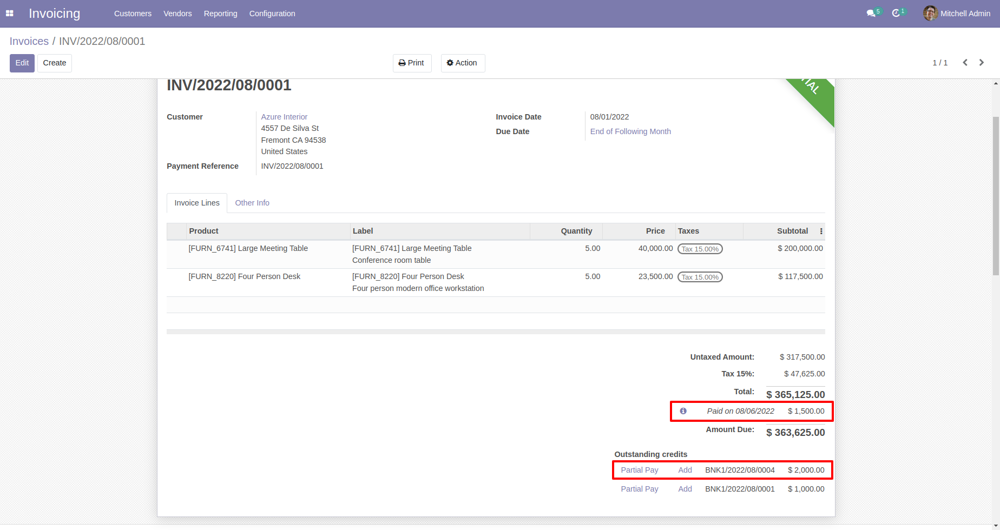
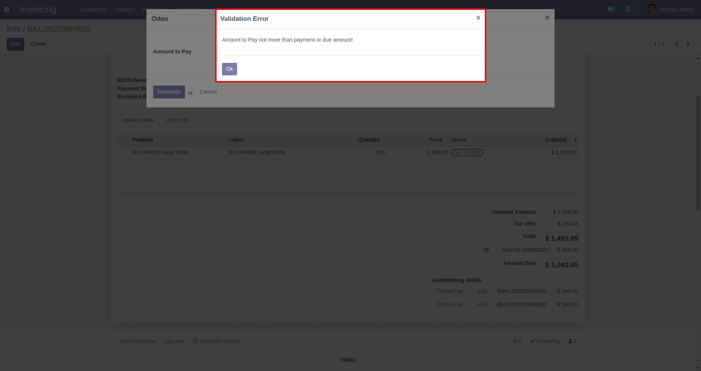

App Features
- Partial payment reconcile on invoices, bills, credit note and redunds.
- Compatible with community and enterprise
Account Partial Payment Reconcile
You can see Partial Pay button on invoice/credit note for each payments to reconcile
When you click on Partial Pay button then open wizard with outstanding amount of payment
You can enter partial amount to reconcile and click on button

You can see amount is reconciled with the invoice and outstanding amount updated

Also you can see partial pay buttons on vendor bills/refunds for each payments
You can enter the partial amount to pay and reconcile
You can see amount is reconciled and outstanging updated
When you click on partial pay only remaining outstanding will be shown, also you can make partial reconcile multiple times with single payment
Also added validation when user enter amount to pay more than outstanding or residial amount

Also you can unreconcile partial pay amount as per odoo standard feature.
Note : This app does not support multi currency.